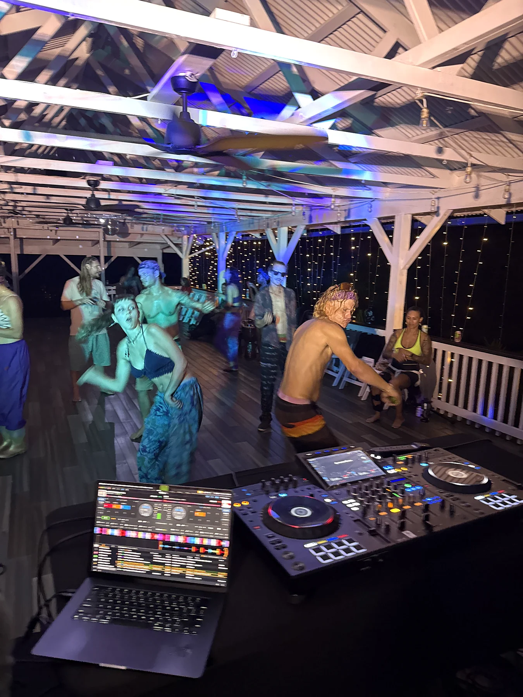

Large-format guest capacity
Planning target of up to 350 guests or ticket holders. Workforce, performers, vendors and production personnel are tracked separately.
Production Specifications
This specification center is intentionally transparent: confirmed facts are labeled verified; unmeasured or unconfirmed items remain pending rather than being guessed.

Demonstrated use
NOCTURNE placed the pavilion, performance position, audience environment and late-night operations under real show conditions. Use the case study as evidence of atmosphere and flow, then use the matrix below for the facts that still need event-specific verification.
Producer checklist
This page becomes the single source of truth as measurements are completed.
Planning target of up to 350 guests or ticket holders. Workforce, performers, vendors and production personnel are tracked separately.
Four-acre private event property used for the Wild Ones production-market positioning.
Record clear width, clear height, surface, slope, turning approach and largest practical vehicle class.
Confirm load-in road width, turning radii, soft-ground limitations, truck staging and wet-weather contingencies.
Inventory panels, service amperage, voltages, breaker sizes, receptacle locations, available dedicated circuits and generator tie-in strategy.
Confirm usable level footprints, slope, orientation options, audience sightlines, anchoring constraints and weather exposure.
Establish practical guest, staff, artist, vendor and production-vehicle counts under dry and wet conditions.
Document clear emergency lanes, secondary access, assembly points, egress widths and no-build zones with the appropriate authorities.
Identify practical FOH positions and cable runs that minimize trip hazards and preserve guest circulation.
Record permanent fixtures, portable-unit positions, servicing access and accessible guest options.
Laser, haze/fog, CO₂, flame and pyrotechnic requests require separate safety, site and permitting review before approval.
Document operating windows, sound-control expectations, monitoring locations and any event-specific restrictions before contract.
Producer access
Public pages provide enough detail to qualify interest. Higher-detail material should be released only to qualified producers and updated from the same specification source.
High-level capacity, property positioning and production philosophy.
Event type, date, attendance, budget, production scope and organizer background are reviewed.
Qualified projects receive controlled access to the current technical packet.
The booked project receives its final site plan, approved operations plan and production-specific requirements.